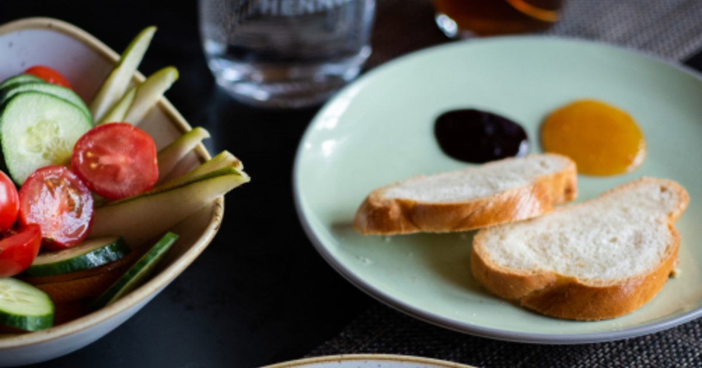

Quick Workouts & Plans
Home Workout for Weight Loss: A Realistic 8-Week Plan
Exercise is not how most people lose weight. It is how they keep the muscle while they do, and how they keep the weight off afterwards. That is a smaller claim and a more useful one.

Almost every home workout for weight loss article makes the same implicit promise: that the exercise is the mechanism. It mostly is not. Being straight about that at the start makes everything below more useful, not less.
If you have a diagnosed health condition, take medication that affects blood sugar or blood pressure, are pregnant or postpartum, or have a history of disordered eating, talk to your doctor before starting a weight-loss plan. This post is general information and cannot account for your situation.
The honest version
A vigorous thirty-minute bodyweight session burns somewhere in the region of 200–300 calories for an average adult. That is a slice of buttered toast and a banana. Three sessions a week is roughly 750 calories — meaningful over a year, close to noise over a week.
Meanwhile, the difference between a moderately careless and a moderately careful day of eating is easily 500–800 calories. The arithmetic is not close.
This is not an argument against exercise. It is an argument against expecting the wrong thing from it, which is the specific mistake that leads people to train hard for six weeks, see the scale barely move, and conclude that exercise does not work for them.
What training actually contributes
It protects muscle while you lose fat. This is the big one. In a calorie deficit the body will take some of the shortfall from lean tissue unless given a reason not to. Resistance training plus adequate protein is that reason. Meta-analytic evidence shows protein intake supports muscle mass retention alongside resistance training,1 and this is the mechanism that determines whether you end up smaller and strong or smaller and weaker.
It changes what the same weight looks like. Two people at identical weights with different amounts of muscle look substantially different. This is why the scale is a poor tool for judging a plan that includes resistance training.
It is strongly associated with keeping weight off. The evidence on maintenance is more consistent than the evidence on loss. Exercise appears to matter more for not regaining than for the initial reduction.
It does things unrelated to weight. Cardiovascular health, insulin sensitivity, bone density, mood, sleep. These are real and are not conditional on the scale moving.
Judge this plan by whether you got stronger, not by what the scale did. The scale is answering a question about your kitchen.
The eight-week plan
Three strength sessions and two walks a week. The strength work is the priority; the walking is the part that adds up.
| Day | Session | Time |
|---|---|---|
| Monday | Strength A | 30 min |
| Tuesday | Walk | 30–45 min |
| Wednesday | Strength B | 30 min |
| Thursday | Walk or rest | 30 min |
| Friday | Strength C | 30 min |
| Weekend | Something active you enjoy | — |
For the three strength sessions, use the three-day home workout split exactly as written. There is no special fat-loss training. The sessions that build strength are the sessions that preserve muscle in a deficit; nothing needs to change because your goal is different.
What does change is the emphasis on progression. In a deficit, maintaining your numbers is a good outcome and increasing them is an excellent one. If your reps are holding steady while your weight drops, the plan is working exactly as intended.
Weeks 1–2
Learn the sessions. Do not chase failure. Establish the walks as non-negotiable.
Weeks 3–5
Add a set to the first two exercises in each session. Start taking the final set of each close to failure.
Weeks 6–8
Progress to harder variations wherever you are at the top of a rep range. Expect progress to slow — in a deficit that is normal and not a sign the plan has stopped working.
Where cardio fits
Walking, mostly. It is easy to recover from, does not compete with strength training, and can be done in quantities that actually matter to weekly energy expenditure. Forty-five minutes of walking most days contributes far more over eight weeks than two hard interval sessions, because you can sustain it.
Interval training has genuine cardiovascular benefits2 and is a reasonable addition if you enjoy it — there is an apartment-friendly version in the 20-minute no-jump HIIT workout. But treat it as conditioning, not as a fat-loss tool, and do not let it compromise recovery from the strength sessions.
The part this plan does not cover
Diet, which is where most of the result comes from. That is outside what I am qualified to prescribe, and anyone offering you a specific calorie target without knowing anything about you should be treated with suspicion.
Two things I will say, because they are uncontroversial and relevant to training. First, protein intake matters more when you are in a deficit and training, both for muscle retention and for satiety — the ranges are covered in how much protein you need for home workouts. Second, extreme deficits reliably reduce training quality, which undermines the one thing the exercise was supposed to be doing.
For actual dietary guidance, a registered dietitian or your GP is the right source. Not a fitness blog, including this one.
What to actually expect
Over eight weeks, with the training done consistently and diet handled sensibly: noticeably stronger, measurably better endurance, better sleep for many people, and a body composition change that is usually more visible than the scale suggests.
What you should not expect is linear weekly weight loss. Weight fluctuates by a kilo or more day to day from water, food volume and hormonal cycles, and a weekly weigh-in can easily show an increase during a fortnight of genuine fat loss. Weighing daily and looking at the weekly average is more informative than weighing once a week, and tracking progress without a gym or scale covers alternatives that are less noisy.
Eight weeks is also short. If the training habit survives to week nine, the plan has succeeded at the thing that most determines the twelve-month outcome — which is the argument in beating the six-week drop-off.
Where to go next
Start with the three-day split, which is the training half of this plan. If you are completely new, run the 4-week beginner plan first.
Frequently asked questions
Can you lose weight with home workouts alone?
Usually not to any large degree. A thirty-minute bodyweight session burns roughly 200 to 300 calories, while day-to-day dietary variation is far larger. Training matters mainly because it preserves muscle during a deficit and is strongly associated with keeping weight off afterwards.
What is the best home workout for weight loss?
The same one that builds strength. There is no separate fat-loss training. Resistance training plus adequate protein is what stops the body taking the deficit out of lean tissue, so a standard strength routine is the right choice.
Should I do cardio or strength training for weight loss?
Both, with strength as the priority and walking as the bulk of the cardio. Walking is easy to recover from, does not interfere with strength work, and can be sustained in amounts that meaningfully affect weekly energy expenditure.
How long before I see results from a home workout plan?
Strength changes are usually measurable within three to four weeks. Visible body composition change typically takes longer and depends far more on diet than on training. Judge the first eight weeks by your training numbers rather than the scale.
Why is the scale not moving even though I am exercising?
Weight fluctuates by a kilogram or more day to day from water, food volume and hormonal cycles, so a single weekly reading is noisy. It is also possible to lose fat and gain a little muscle simultaneously, particularly when new to training.
Sources and further reading
- Nunes EA, Colenso-Semple L, McKellar SR, et al. “Systematic review and meta-analysis of protein intake to support muscle mass and function in healthy adults.” Journal of Cachexia, Sarcopenia and Muscle, 2022;13(2):795–810. PubMed.
- Wu ZJ, Wang ZY, Gao HE, Zhou XF, Li FH. “Impact of high-intensity interval training on cardiorespiratory fitness, body composition, physical fitness, and metabolic parameters in older adults: A meta-analysis of randomized controlled trials.” Experimental Gerontology, 2021;150:111345. PubMed.
- World Health Organization. WHO Guidelines on Physical Activity and Sedentary Behaviour. 2020.
- NHS. Physical activity guidelines for adults aged 19 to 64.
- MedlinePlus, U.S. National Library of Medicine. Exercise and Physical Fitness.
Comments
Comments are not enabled yet. Add a hosted comment embed (Disqus, Commento, Giscus) inside this container when you are ready.